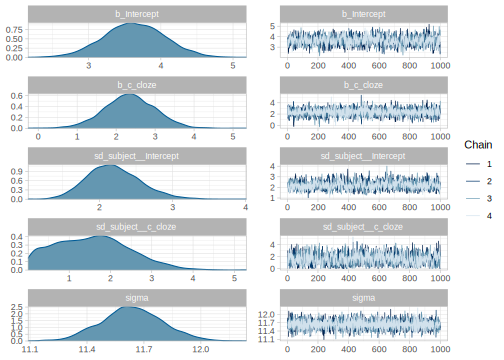

We will illustrate the issues that arise with a log-normal likelihood in a hierarchical model using data from a Stroop task (Stroop 1935; for a review, see MacLeod 1991). We will analyze a subset of the data of 3337 participants that undertook one variant of the Stroop task as part of the battery of tasks run in Ebersole et al. (2016).
For this variant of the Stroop task, participants were presented with one word at the center of the screen, which was either “red”, “blue”, and “green” (word) written in either red, blue, or green font (color). In one third of the trials the word matched the color of the text (“congruent” condition) and in the rest of the trials it did not match (“incongruent” condition). Participants were instructed to only pay attention to the color, and press 1 if the color of the word was red, 2 if it was blue, and 3 if it was green. The complete procedure can be found in https://osf.io/5ykuj/ and the dataset can be found in https://osf.io/n8xa7/. The Stroop effect, that is, the difficulty in identifying the color when it mismatches the word in the incongruent condition (e.g., green in color blue) in comparison to a baseline condition, here, the congruent condition (e.g., green in color green) is extremely robust across variations of the task.
While this task yields two measures: the accuracy of the decision made and the time it took to respond. For the Stroop task, accuracy is usually almost at ceiling level, and to simplify the model, we will ignore it. (See Nicenboim 2018 for a cognitive model that incorporates accuracy and reaction times in the same model to analyze the same Stroop data).
A correlated varying intercept varying slopes log-normal model
If our theory only focuses on the difference between the reaction times for the “congruent” vs. “incongruent” condition, we can ignore the actual color presented and what was written and focus in whether there was a match or not between the two. We will need a predictor that indicates whether each trial is congruent or incongruent (c_cond). For simplicity, we will also assume that all participants share the same variance (as we saw in section 5.1.6 changing this assumption leads to distributional regression models). This means that we are going to fit the data with the following likelihood (identical to the likelihood that we fit in section 5.1.4 except that here the location and scale are embedded in a log-normal likelihood rather than a normal one). This likelihood indicates that we are dealing with a hierarchical model with by-subjects varying intercept and varying slopes model:
\[\begin{equation}
rt_n \sim LogNormal(\alpha + u_{i[n],0} + c\_cond_n \cdot (\beta + u_{i[n],1}), \sigma)
\end{equation}\]
We will discuss how to deal with the coding of conditions, such as c_cond, with more details in chapter 6 (and see also Schad et al. 2020 for the mathematics underlying different kinds of contrasts), but for now it will suffice to say that we assign a 1 to c_cond for the “incongruent” condition and a -1 for the “congruent” one (i.e., a sum coding contrast). This will mean that if \(\beta\) turns out to be positive, the incongruent condition will be slower than the congruent one. This is because on average the location of the log-normal likelihood for each condition will be as follows. (We could have chosen to do the opposite assignments, and get to the opposite conclusion without any change in the underlying model).
\[\begin{equation}
\begin{aligned}
\mu_{incongruent} &= \alpha + 1 \cdot \beta \\
\mu_{congruent} &= \alpha + -1 \cdot \beta
\end{aligned}
\end{equation}\]
As always, we need priors for all the parameters in our model. For the population-level parameters (or fixed effects), we use the same priors as we did when we were fitting a regression with a log-normal likelihood in section 3.5.3.
\[\begin{equation}
\begin{aligned}
\alpha & \sim Normal(6, 1.5) \\
\beta & \sim Normal(0, .01) \\
\sigma &\sim Normal_+(0, 1)
\end{aligned}
\end{equation}\]
Here, \(\beta\) represents the effect of the experimental manipulation in log-scale: how much we increase or decrease the location of the log-normal in comparison to the intercept, \(\alpha\). For this model, \(\beta\) will probably be longer than for the model that examined the difference in pressing the spacebar for two consecutive trials in section 3.5.3. We might need to examine the prior for \(\beta\) with predictive distributions, but we will delay this for now.
In contrast to our previous models, the intercept, \(\alpha\), is not the grand mean of the location because the conditions were not balanced in the experiment (one third of the conditions were congruent and two thirds incongruent). The intercept could be interpreted here as the time (in log-scale) it takes to answer if we cancel out the experimental manipulation.
We focus now on the priors for the group-level parameters (or random effects). If we assume a possible correlation between by-participant intercept and slope, our model will have the following structure, which requires us to assign priors to \(\Sigma_u\).
\[\begin{equation}
\begin{aligned}
{\begin{pmatrix}
u_{i,0} \\
u_{i,1}
\end{pmatrix}}
&\sim {\mathcal {N}}
\left(
{\begin{pmatrix}
0\\
0
\end{pmatrix}}
,\boldsymbol{\Sigma_u} \right)
\end{aligned}
\end{equation}\]
\[\begin{equation}
\begin{aligned}
\boldsymbol{\Sigma_u} & =
{\begin{pmatrix}
\tau_{u_0}^2 & \rho_u \tau_{u_0} \tau_{u_1} \\
\rho_u \tau_{u_0} \tau_{u_1} & \tau_{u_1}^2
\end{pmatrix}}
\end{aligned}
\end{equation}\]
In practice this means that we need priors for the by-participant variances and correlations. For the variance components (which, confusingly enough, are actually standard deviations in our prior specification), we will set a similar prior than for \(\sigma\). We don’t expect the by-group adjustments to the intercept and slope to have more variance than the overall observations, so this prior will be quite conservative (keeping a big deal of uncertainty). We assign the same prior for the correlations as we did in 5.1.5.
\[\begin{equation}
\begin{aligned}
\tau_{u_0} &\sim Normal_+(0,1)\\
\tau_{u_1} &\sim Normal_+(0,1)\\
\rho_u &\sim LKJcorr(2)
\end{aligned}
\end{equation}\]
We are ready to fit a model now. To speed up computation, we subset 50 participants of the original dataset. (In a real setting, we would obviously not subset the participants.)
We restrict ourselves to the correct trials only and we add a c_cond predictor with the sum coded variable.
We fit the model with 4000 iterations rather than with the default of 2000 iterations by chain. This is because if we run the model with the default number of iterations, the following warning that appears: Warning: Bulk Effective Samples Size (ESS) is too low, indicating posterior means and media Running the chains for more iterations may help. See http://mc-stan.org/misc/warnings.html#bulk-ess.
fit_stroop_data <- brm(RT ~ c_cond + (c_cond | subject),
family = lognormal(),
prior =
c(prior(normal(6, 1.5), class = Intercept),
prior(normal(0, .01), class = b),
prior(normal(0, 1), class = sigma),
prior(normal(0, 1), class = sd),
prior(lkj(2), class = cor)),
iter = 4000,
data = df_stroop_data)
We will focus on \(\beta\) (but you can verify that there is nothing surprising in fit_stroop_data ):
## Estimate Est.Error Q2.5 Q97.5
## b_c_cond 0.027 0.0056 0.016 0.038
After seeing the posterior for \(\beta\), we suspect that the prior might have been too restrictive. If we overlay density plots for prior and posterior distributions this is more evident:

A sensitivity analysis
We see that the posterior distribution covers values much larger than the ones that are in the bulk of the prior distribution. Is our posterior overly biased by the prior distribution? We can investigate this with a sensitivity analysis. We will examine what happens for the following priors for \(\beta\):
- \(\beta \sim Normal(0,.05)\)
- \(\beta \sim Normal(0,.1)\)
- \(\beta \sim Normal(0,1)\)
- \(\beta \sim Normal(0,2)\)
sds <- c(0.001, 0.01,0.05, 0.1, 1, 2)
df_beta_stroop <- map_dfr(sds, function(sd){
priorb <- paste0("normal(0, ",sd ,")")
fit <- brm(RT ~ c_cond + (c_cond | subject),
family = lognormal(),
prior =
c(prior(normal(6, 1.5), class = Intercept),
prior_string(priorb, class = "b"),
prior(normal(0, 1), class = sigma),
prior(normal(0, 1), class = sd),
prior(lkj(2), class = cor)),
iter = 4000,
data = df_stroop_data)
posterior_summary(fit, pars = c("b_c_cond")) %>%
as_tibble() %>%
mutate(prior = priorb)
})
We can summarize the estimates of \(\beta\) given different priors in the following way:
| 0.00 |
0.00 |
0.00 |
normal(0, 0.001) |
| 0.03 |
0.02 |
0.04 |
normal(0, 0.01) |
| 0.04 |
0.02 |
0.05 |
normal(0, 0.05) |
| 0.04 |
0.03 |
0.05 |
normal(0, 0.1) |
| 0.04 |
0.03 |
0.05 |
normal(0, 1) |
| 0.04 |
0.03 |
0.05 |
normal(0, 2) |
It might be easier to see how much the posterior difference between conditions changes depending on the prior. In order to answer this question, we need to remember that the median difference between conditions can be calculated as the difference between the exponentiation of each condition:
\[\begin{equation}
\begin{aligned}
MedianRT_{diff} &= MedianRT_{incongruent} - MedianRT_{congruent}\\
MedianRT_{diff} &= exp(\alpha + \beta) - \exp(\alpha - \beta)
\end{aligned}
\tag{5.2}
\end{equation}\]
This means that we need to re-run the models to extract samples from the intercept.
sds <- c(0.001, 0.01,0.05, 0.1, 1, 2)
df_diffs_stroop <- map_dfr(sds, function(sd){
priorb <- paste0("normal(0, ",sd ,")")
fit <- brm(RT ~ c_cond + (c_cond | subject),
family = lognormal(),
prior =
c(prior(normal(6, 1.5), class = Intercept),
prior_string(priorb, class = "b"),
prior(normal(0, 1), class = sigma),
prior(normal(0, 1), class = sd),
prior(lkj(2), class = cor)),
iter = 4000,
data = df_stroop_data)
sample_a_post <- posterior_samples(fit)$b_Intercept
sample_b_post <- posterior_samples(fit)$b_c_cond
RT_diff = exp(sample_a_post + sample_b_post) -
exp(sample_a_post - sample_b_post)
tibble(`mean diff (ms)` = mean(RT_diff),
Q2.5 = quantile(RT_diff, .025),
Q97.5 = quantile(RT_diff, .975),
prior = priorb)
})
We get the posterior distributions of the median difference between conditions for different models by using equation (5.2). We calculate the median difference rather than the mean difference because the mean depends on the parameter \(\sigma\), but the median doesn’t; see 3.5.3. In the following table, we use means–this is orthogonal to our use of median before, we could have summarized the distribution with its median–, and 95% quantiles to summarize these distributions.
| 0.67 |
-1.5 |
2.8 |
normal(0, 0.001) |
| 30.08 |
17.7 |
42.0 |
normal(0, 0.01) |
| 41.41 |
27.7 |
55.0 |
normal(0, 0.05) |
| 41.93 |
28.3 |
56.3 |
normal(0, 0.1) |
| 42.08 |
28.0 |
56.1 |
normal(0, 1) |
| 42.14 |
28.2 |
55.8 |
normal(0, 2) |
This shows us that the posterior changes substantially when we include wider priors in our model. It seems that the posterior is relatively unaffected for priors with a standard deviation larger than .05, but if we assume a priori that the effect of the manipulation must be small, we will end up finding that. When we include less information about the possible effect sizes with a more diffuse prior–we assume that they can be small but also large–, we allow the data to influence more the posterior. (We can safely ignore a difference of a couple milliseconds in \(\approx 40\) milliseconds.)